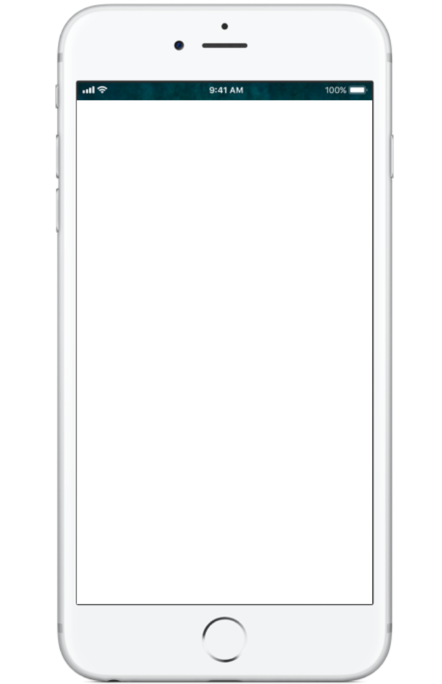
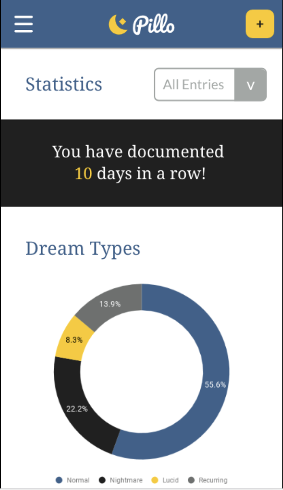

Pillo is inspired by my love for recording dreams.
For my class, we were required to make an app design for an issue we were passionate about. The issue I tackled was the lack of good ways to record dreams digitally.
I've been fascinated with dreams since I was a child, and for a while I kept a physical dream journal. Overtime, I wanted to keep a digital journal too. However, I found out that none of the apps I found were what I needed.


Research
One of my biggest challenges was to find others who also recorded their dreams.
In the time frame I was given, I only managed to find one other person who has been sometimes writing down their dreams.
Other than that, everyone else was interested in writing down their dreams. However, I found recurring themes when I interviewed them:
They don’t journal often because they don’t have time
They were also more willing to take down dreams, if they had more time
They prefered typing or writing, and they weren't used to using text to speech or other ways of taking information.
Shown here are my first and second iterations of the new entry section. For my first prototype, users said they were overwhelmed with too many prompts on one screen.
As a result, I decided to make my second iteration a step by step screen. Users told me that entering an entry now took too long, as you had to go one screen at a time. I learned that I needed to find a balance in my final product.
Branding
People tend to record at different times of day, especially with something regarding their sleep. That's why I had to make two color schemes: a dark mode and a light mode.
Throughout the process, I learned that you need to be consise with terminoloy, especially in terms of navigation.
For example, users initally didn't know where to find their unfinished journal entries in the menu bar.
I also learned to constantly remember the main purpose of the app.
Overtime, people kept asking for more and more features, such as a sharing and social media section. However, I learned that while people liked the thought of reading other peoples dreams, most weren't keen on sharing theirs either.
The main purpose of the app was to see how real life is reflected within our dreams.
{kind=link}
{kind=link}
{kind=link}
{kind=link}